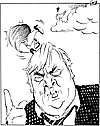

|
Dagens Inge:  Inge-galleri Tidligere artikler |
Dagens ledere Morgen: Chirac satser på et felles forsvar Jeltsin og hans nasjonalisme "Litt av hvert . . ." |
|
|
Kronikk Bit for bit - inn i den digitale revolusjon GRO HARLEM BRUNDTLAND Statsminister Gro Harlem Brundtland sa under utenriksdebatten i Stortinget for to uker siden at den nye kommunikasjonsteknologien vil sprenge sensurens grenser. I dagens "I Perspektiv" skriver hun at IT-revolusjonen også stiller nye krav til politikken. Alle aldersgrupper må få opplæring, prisene må bli lavere og vi får bedre tjenester, særlig innen helse og sosialvesen.
|